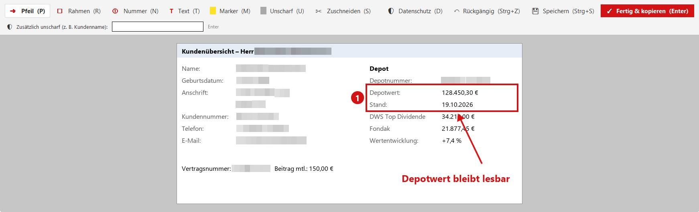
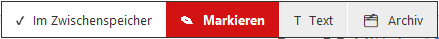
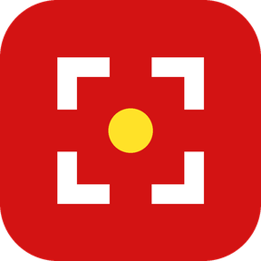

Ein Klick – und dein Screenshot
ist fertig für die KI.
Eine Taste, Bereich wählen, Strg + V. Kundendaten werden auf Knopfdruck unscharf, Zahlen bleiben lesbar.
⬇ Kostenlos holen
Beispiel mit erfundenen Daten: ein Druck auf „D“, und alles Persönliche ist unscharf.
Alles, was du beim Arbeiten mit KI brauchst
Und nichts, was dich aufhält.
Eine Taste für alles
Bereich ziehen, Fenster anklicken oder ganzer Bildschirm. Das Bild liegt sofort im Zwischenspeicher.
Datenschutz auf Knopfdruck
Name, Geburtsdatum, Anschrift, Kunden- und Vertragsnummern, Mail, Telefon, IBAN werden unscharf. Beträge bleiben stehen.
Markieren wie gewohnt
Pfeil, Rahmen, Nummern, Text, Textmarker, Unscharf, Zuschneiden. Alles nachträglich verschiebbar.
Text statt Bild
Fehlermeldungen, Scans, Folien: Knips liest den Text heraus. Die Texterkennung läuft auf deinem Rechner.
Scroll-Screenshot
Für Seiten, die länger sind als der Bildschirm: Knips scrollt selbst nach unten, macht ein ganzes Bild daraus – auf Wunsch als PDF, das die KI Seite für Seite scharf liest.
Archiv
Jeder Screenshot wird aufgehoben, nach Tagen sortiert. Ein Klick legt ihn wieder in den Zwischenspeicher.
In einer Minute eingerichtet
Kein Konto, kein Passwort, keine Einstellungen. Nur Name und Mail-Adresse.
Freischalten
Unten Name und Mail-Adresse eintragen, dann herunterladen und die Datei öffnen.
Windows-Hinweis wegklicken
Zeigt Windows „Der Computer wurde geschützt“: „Weitere Informationen“ → „Trotzdem ausführen“. Das ist bei neuen Programmen normal.
Taste drücken
Strg + Num 1, Bereich ziehen, mit Strg + V einfügen. Fertig.

Nach jedem Screenshot entscheidest du in einem Klick: einfügen, markieren, Text herauslesen oder ins Archiv.
Die Tasten
„Num“ ist der Ziffernblock rechts. Alles geht auch per Maus über das Knips-Symbol bei der Uhr.
| Screenshot | Strg + Num 1 |
| Screenshot und gleich markieren | Strg + Num 2 |
| Text erkennen | Strg + Num 3 |
| Screenshot in 3 Sekunden (für offene Menüs) | Strg + Num 4 |
| Scroll-Screenshot (scrollt selbst) | Strg + Num 5 |
| Zentrale und Archiv | Strg + Num 0 |
Für dein Stream Deck
Eine Taste drücken, Knips ist da. Die Taste schickt Strg + Num 1 selbst, du brauchst dafür nicht einmal einen Ziffernblock.

Fertige Taste
Bild und Tastenkürzel sind schon drin.
- Knips freischalten, dann die fertige Knips-Taste herunterladen.
- Stream-Deck-Programm öffnen und die Datei auf eine freie Taste ziehen. Oder: Rechtsklick auf die freie Taste → „Aktion importieren …“.
- Taste drücken, Bereich ziehen, mit Strg + V einfügen.
Braucht Stream Deck ab Version 6.8.
Selbst anlegen
Dauert eine Minute, falls du es lieber selbst machst.
- Rechts in der Liste System aufklappen.
- Hotkey auf eine freie Taste ziehen.
- Ins Feld „Hotkey“ klicken und Strg + Num 1 drücken.
Bleibt das Feld leer? Dann hat Knips das Kürzel geschnappt. Knips kurz beenden (Knips-Symbol bei der Uhr → Beenden), Kürzel eintragen, Knips über das Startmenü wieder starten.
Tastenbild: Rechtsklick auf das Bild der Taste → „Bilddatei auswählen“.
Noch kein Stream Deck? Ich arbeite mit dem Stream Deck XL. Zu meiner Ausstattung →
Knips kostenlos holen
Trag dich ein, und du kannst Knips und die Stream-Deck-Taste sofort herunterladen.